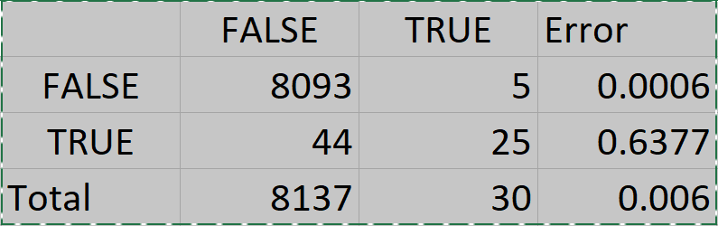

In this section we aim to leverage our collected data. We use different analytics approaches to derive relevant and useful threat intelligence.
The approaches we used are listed below.
LDA Topic Modeling
Topic modeling is an analytical approach that can be used for discovering abstract topics in a collection of documents.
This approach was chosen for our Twitter dataset because there is an abundance of unstructured data, and this approach can allow us to discover the relevant topics.
Steps Taken:
First, we created a subset of the data that contained the term “healthcare”.
We did this to filter out irrelevant information.
Next, we created a corpus from the relevant tweets, removing all special characters and stop words.
Last, we created an LDA model with visualizations, testing out different numbers of topics to find the most coherent model.
Value added:
This adds value in the form of organizing open source intelligence in a more interpretable fashion.
By creating topic models we can get insight into what topics hacktivists are discussing.
Tools Used:
Jupyter notebook
Python
pyLDAvis package
Evaluation Method:
Coherence score
Intertopic distance map
Deep Neural Network
We created a deep neural network for the purpose of creating a model that can predict if a post is related to healthcare.
This can provide us with a means of identifying relevant news articles in our reddit dataset.
Steps Taken:
Increased Reddit collection to 8,167 posts
Labeled collection
Keyword searching of the following terms in reddit titles: health, hospital, covid, vaccine
Label posts with boolean ‘related to healthcare’ attribute for a total of 69 posts related to healthcare
Leveraged RapidMiner for text processing and rapid prototyping of model
Value Added:
Allows us to detect if a post has a relation to healthcare beyond just keyword searches.
Tools Used:
Reddit API : collection
Pandas: processing and labeling
RapidMiner: text processing (tokenization) and algorithm
Evaluation Method:
Precision and recall
Confusion matrix

Deep Neural Network Confusion Matrix
MalwareBazaar
Collection of malware samples that can be utilized to help healthcare threat analysts protect customers and organizations from cyber threats.
Heodo and CobaltStrike have both been used for ransomware attacks.
Payout demands for ransomware attacks associated with Cobaltstrike have ranged from $500,000 to $10,000,000.
Malware, specifically ransomware has cost the healthcare sector at least $160 million since 2016.
There was a 350% increase in ransomware attacks on healthcare entities in Q4 2019 vs Q4 2018.
Our datasets holds specific ransomware samples associated with the healthcare industry.
Data Attributes
Date Discovered
Sha-256 hash
Md5 hash
File name
File Type
Signature (Malware Family)
Mime Type
Dataset statistics:
266,722 ransomware samples
Top 10 Ransomware Families are pictured in the displayed figure.